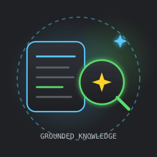
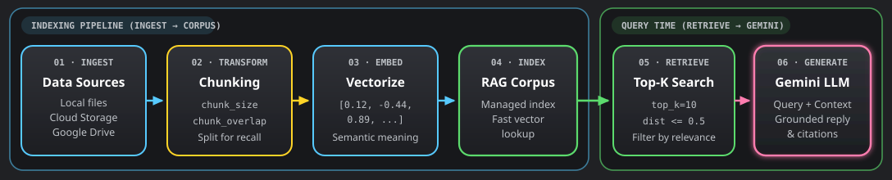
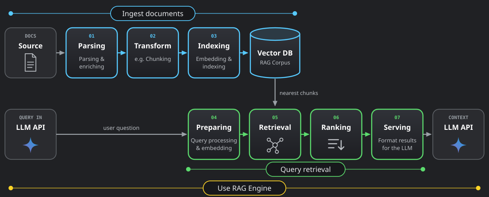
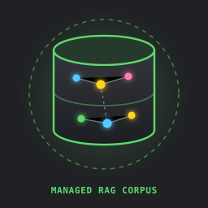
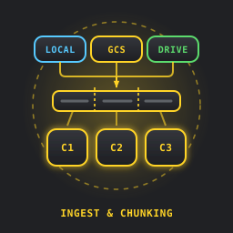
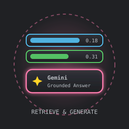
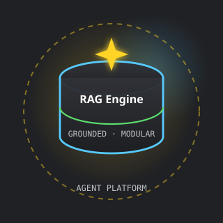

RAG Engine
RAG Engine GeminiGCS & Drive
GeminiGCS & Drive
 Google Developer GroupBangkok · DevFest 2026
Google Developer GroupBangkok · DevFest 2026
Agenda
- 01Why RAG EnginePrivate knowledge, 6-stage pipeline & modularity
- 02Setup & CorpusAgent Platform SDK, Gen AI SDK & creating a corpus
- 03Ingest & ChunkLocal files, Cloud Storage, Google Drive & IAM
- 04Retrieve & GenerateDirect retrieval, Gemini Tool & production checklist

Why RAG
Engine
Private enterprise knowledge,
6-stage pipeline & modularity
Why ground LLMs with external private data?
Up-to-date private knowledge
Pre-trained models freeze at a cutoff and never see internal docs. RAG injects current org data at query time.
Factual grounding, fewer hallucinations
Anchoring generation in retrieved passages drastically lowers fabricated answers and improves domain accuracy.
Trust & source citations
Retrieved chunks carry source metadata so users can trace every claim back to the original PDF or Drive file.
Cost-efficient updates
Add or refresh documents in a corpus in seconds instead of paying for continuous model retraining or fine-tuning.
Six stages managed by RAG Engine
RAG Engine
Gemini

generate_content.Ingest documents, then query retrieval
RAG Engine


Setup &
Corpus
Install SDKs, initialize clients &
create your first RAG Corpus
Install SDKs and initialize Agent Platform
import os
import agentplatform
from agentplatform import types
from google import genai
from google.genai import types as genai_types
PROJECT_ID = os.environ.get("GOOGLE_CLOUD_PROJECT")
client = agentplatform.Client(
project=PROJECT_ID,
location="us-east1",
)Enable Agent Platform API
Enable aiplatform.googleapis.com in your GCP project and authenticate via Colab or ADC.
Clean Two-SDK Split
agentplatform manages corpora, imports & retrieval. google-genai runs Gemini generation.
Pick a Supported Region
Check RAG Engine regional availability (e.g. us-east1, us-central1) before creating corpora.
Create and verify your RAG Corpus
rag_corpus = client.rag.create_corpus(
rag_corpus=types.RagCorpus(
display_name="my-rag-corpus",
)
)
print(rag_corpus.name)
# projects/{num}/locations/us-east1/ragCorpora/{id}corpora = client.rag.list_corpora()
for c in corpora:
print(c.display_name, "→", c.name)What is a RAG Corpus?
A logical container that stores your files, chunks, embeddings, and managed vector index together.
Resource Name Handle
Keep rag_corpus.name — you pass this full resource path to upload, import, retrieve, and Gemini tools.
Domain Isolation
Create separate corpora per domain (e.g. HR policies, investor filings, support runbooks) for cleaner recall.

Ingest &
Chunk
Local files, Cloud Storage,
Google Drive & Service Agent IAM
Three built-in paths to load your corpus

Local File Upload
Synchronous upload straight from your notebook or laptop via upload_file().

Cloud Storage (GCS)
Bulk async ingestion from gs://bucket/* with custom chunking & QPM throttling.
Google Drive
Pull living team folders or individual Drive files directly via GoogleDriveSource.

service-{project_number}@gcp-sa-vertex-rag.iam.gserviceaccount.com
Upload a local file or bulk-import from GCS
rag_file = client.rag.upload_file(
corpus_name=rag_corpus.name,
path="test.md",
display_name="test.md",
)Upload a single markdown or PDF file directly from Colab to test retrieval quality before wiring up cloud storage.
GCS_URI = (
"gs://cloud-samples-data/gen-app-builder/"
"search/alphabet-investor-pdfs/*"
)
response = client.rag.import_files(
name=rag_corpus.name,
import_config=types.ImportRagFilesConfig(
gcs_source=types.GcsSource(uris=[GCS_URI]),
rag_file_transformation_config=(
types.RagFileTransformationConfig(
rag_file_chunking_config=(
types.RagFileChunkingConfig(
chunk_size=1024,
chunk_overlap=100,
)
)
)
),
max_embedding_requests_per_min=900,
),
)Import folders or files from Google Drive
folder_url = (
"https://drive.google.com/drive/folders/{folder_id}"
)
response = client.rag.import_files(
name=rag_corpus.name,
import_config=types.ImportRagFilesConfig(
google_drive_source=types.GoogleDriveSource(
resource_ids=[
types.GoogleDriveSourceResourceId(
resource_id=folder_url,
resource_type=(
types.ResourceType.RESOURCE_TYPE_FOLDER
),
)
]
),
rag_file_transformation_config=(
types.RagFileTransformationConfig(
rag_file_chunking_config=(
types.RagFileChunkingConfig(
chunk_size=512,
chunk_overlap=50,
)
)
)
),
),
)Eligible Drive URLs
Folder: drive/folders/{folder_id}
File: drive.google.com/file/d/{file_id}
Share with Service Agent
Click Share → Viewer in Google Drive and add:service-{num}@gcp-sa-vertex-rag.iam.gserviceaccount.com
Tighter Chunks for Docs
Uses chunk_size=512 and chunk_overlap=50 for focused Q&A over shorter Drive docs.
How to choose chunk size, overlap & throughput
| Parameter | Notebook Value | Too Small / Low | Too Large / High |
|---|---|---|---|
chunk_size |
512 (Drive)1024 (PDFs) |
Loses surrounding context; fragments tables or multi-step answers. | Dilutes vector similarity; wastes prompt tokens with noisy text. |
chunk_overlap |
50 – 100(~10% of size) |
Sentences split across boundaries miss exact keyword/idea matches. | Duplicate chunks eat up top_k slots with repeated content. |
max_embedding_requests_per_min |
900 QPM |
Slow bulk backfill on large GCS buckets (thousands of PDFs). | Can hit project embedding quota (429 RESOURCE_EXHAUSTED). |

Retrieve &
Generate
Direct context retrieval, Gemini
Retrieval Tool & production tips
Inspect raw chunks with retrieve_contexts()
response = client.rag.retrieve_contexts(
vertex_rag_store=genai_types.VertexRagStore(
rag_resources=[
genai_types.VertexRagStoreRagResource(
rag_corpus=rag_corpus.name
)
]
),
query=types.RagQuery(
text="What is RAG and why it is helpful?",
rag_retrieval_config=types.RagRetrievalConfig(
top_k=10,
filter=types.RagRetrievalConfigFilter(
vector_distance_threshold=0.5
),
),
),
)
print(response)Model-Agnostic Context
Returns raw ranked text chunks & scores — pass them to any LLM, custom reranker, or evaluation harness.
top_k + Distance Filter
top_k=10 caps candidate count; vector_distance_threshold=0.5 drops irrelevant matches.
Debug Recall First
Always run retrieve_contexts() before generation to verify your corpus actually retrieves the right passage.
Generate grounded answers with one Gemini Tool
google-genai
# 1. Wrap your RAG Corpus as a Gemini Tool
rag_retrieval_tool = genai_types.Tool(
retrieval=genai_types.Retrieval(
vertex_rag_store=genai_types.VertexRagStore(
rag_corpora=[rag_corpus.name],
similarity_top_k=10,
vector_distance_threshold=0.5,
)
)
)
# 2. Generate grounded content via Gen AI SDK
genai_client = genai.Client(
project=PROJECT_ID, location="us-east1"
)
response = genai_client.models.generate_content(
model="gemini-4-hydrogen",
contents="What is RAG?",
config=genai_types.GenerateContentConfig(
tools=[rag_retrieval_tool]
),
)
print(response.text)Single-Call Grounding
Gemini automatically queries your corpus, injects top-K chunks, and synthesizes a grounded answer in one API call.
No Manual Prompt Stuffing
Skip string concatenation — pass tools=[rag_retrieval_tool] into GenerateContentConfig.
Built-in Grounding Metadata
Inspect response.candidates[0].grounding_metadata to surface citations and source URIs in your UI.
Direct retrieval vs. Gemini Retrieval Tool
| Dimension | Direct (retrieve_contexts) |
Gemini Tool (VertexRagStore) |
|---|---|---|
| SDK Call | agentplatform.Client().rag |
genai.Client().models.generate_content |
| Pipeline Control | Full control — add custom reranking, filtering, or multi-source merge. | Managed end-to-end — minimal boilerplate, single round-trip. |
| Model Choice | Works with any LLM (Gemini, open models, custom endpoints). | Native to Gemini models on Vertex AI / Agent Platform. |
| Best Use Case | Debugging recall, eval pipelines, hybrid search, ADK custom tools. | Fast production Q&A apps & chatbots with built-in citations. |
retrieve_contexts() during dev & eval, then ship rag_retrieval_tool in production.Production checklist for Vertex AI RAG Engine
- ✓Grant Service Agent Viewer IAM on every GCS bucket and Drive folder before importing.
- ✓Tune chunking per doc type — 512/50 for concise docs, 1024/100 for dense PDFs.
- ✓Set
vector_distance_threshold(e.g. 0.5) so off-topic chunks never pollute Gemini. - ✓Throttle bulk imports with
max_embedding_requests_per_minto avoid 429 errors.
- ✓Debug with
retrieve_contexts()before tweaking prompts — fix retrieval first. - ✓Separate corpora by domain & ACL so users only search authorized knowledge bases.
- !Don't hardcode
PROJECT_ID— readGOOGLE_CLOUD_PROJECTand match supported regions. - !Don't ignore citations — surface
grounding_metadataso users can verify answers.
Ingest, Retrieve, Generate
1 · Ingest
Create a RAG Corpus and load Local files, GCS buckets, or Google Drive folders with tuned chunking.
2 · Retrieve
Query semantic vectors via retrieve_contexts() with top_k and vector_distance_threshold.

3 · Generate
Attach VertexRagStore as a Gemini Retrieval Tool for grounded, cited answers in one call.
intro_rag_engine.ipynb in Colab, create a corpus, and ground Gemini on your own Drive folder in 5 minutes.Notebook, docs & next steps
Colab: Intro to RAG Engine
Open intro_rag_engine.ipynb in Colab
GitHub Source Notebook
GoogleCloudPlatform/generative-aiRAG Engine Overview Docs
Agent Platform RAG Engine Docs
Supported Regions
Vertex AI RAG Engine LocationsGoogle Gen AI Python SDK
googleapis.github.io/python-genai/Pair with ADK Agents
Explore Tools & ADK decks →Thank you
Q & A
Punsiri Boonyakiat
Google Developer Expert in Cloud AI
